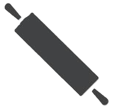
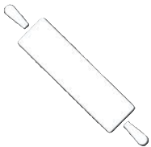
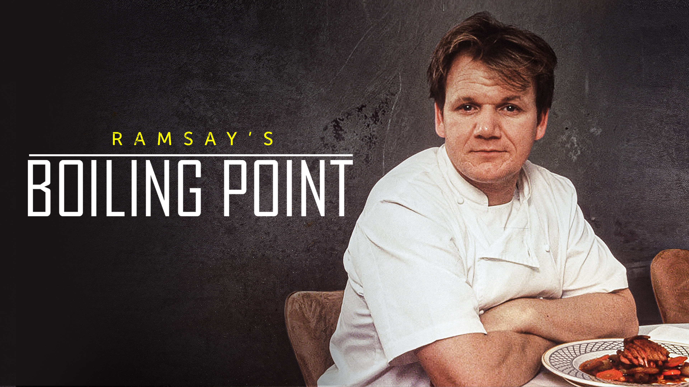
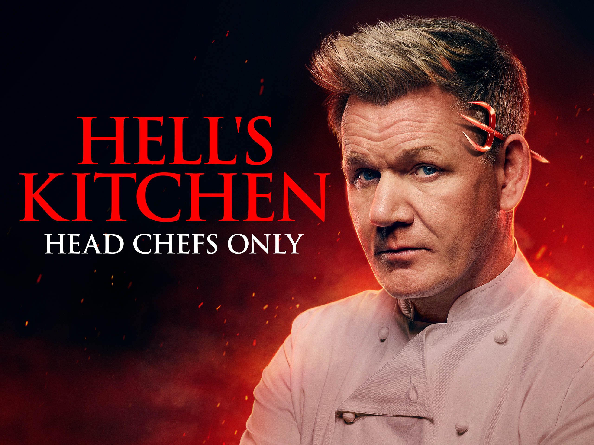

Experience Page
Some of the shows I've done!


Boiling Point
This TV series was Gordon Ramsay's first. Airing in 1999, it was a documentary that followed Ramsay and his opening of his restaurant Restaurant Gordon Ramsay. It only had 5 episodes, but it did have a follow up series in 2000, Beyond Boiling Point, about Ramsay's life after opening Restaurant Gordon Ramsay.

Hell's Kitchen
Gordon Ramsay created Hell's Kitchen, which is a cooking competition in the UK that aired from 2004 to 2009. Ramsay also hosts the American version of the show which has the same name. This series started in 2005 and it currently has 23 seasons. In each season, two teams compete to be head chef at a restaurant.

Kitchen Nightmares
Another one of Gordon Ramsay's shows with both a UK version and an American version. This is a show that follow Ramsay as he works with failing restaurants. He spends a week trying to help the business improve. He then returns after a while to see how the business did after he left.

Masterchef
Gordon Ramsay has been a judge on Masterchef USA for all 14 of its seasons. The show is another cooking competition and it first aired in 2010. The contestants compete in various kinds of competitions to be the winnner for that season. The winner gets various prizes, including $250000, the Masterchef trophy and the title of Masterchef.
Ramsay has also judged on all 9 season of Masterchef Junior. Which is a competition for kids age 8-13, with similar challenges and prizes as Masterchef.

Youtube
Gordon Ramsay started a youtube channel 15 years ago. It is full of various kinds of videos such as tutorials and tips, funny clips and even full episodes of some of his shows. [7]